<title>Файл в ответе</title>
<meta name="claude:viewport-fit-sides" content="cover">
<link rel="stylesheet" href="https://fonts.googleapis.com/css2?family=Inter:wght@400;500;600;700&family=Space+Grotesk:wght@500;700&display=swap">
<style>
/* Лента согласования: шапка-решения → платформы (светлая | тёмная), снизу хранилище и доступ */
:root {
  --bg: #f6f5fb; --surface: #ffffff; --ink: #17151f; --ink-2: #4b4860; --ink-3: #807c96;
  --line: #e4e1ef; --accent: #6354cf; --accent-soft: #ecE9fb; --ok: #1e9e63; --ok-soft: #e4f6ed; --warn: #b4561c; --warn-soft: #fcefe5;
  --display: "Space Grotesk", "Inter", system-ui, sans-serif; --body: "Inter", system-ui, -apple-system, sans-serif;
}
@media (prefers-color-scheme: dark) { :root:not([data-theme="light"]) {
  --bg: #121118; --surface: #1b1a23; --ink: #f1effa; --ink-2: #bdb8d4; --ink-3: #8c88a3;
  --line: #2c2a38; --accent: #9a8ef0; --accent-soft: #2a2545; --ok: #5fd39a; --ok-soft: #173326; --warn: #f0a46c; --warn-soft: #3a2618; color-scheme: dark } }
:root[data-theme="dark"] {
  --bg: #121118; --surface: #1b1a23; --ink: #f1effa; --ink-2: #bdb8d4; --ink-3: #8c88a3;
  --line: #2c2a38; --accent: #9a8ef0; --accent-soft: #2a2545; --ok: #5fd39a; --ok-soft: #173326; --warn: #f0a46c; --warn-soft: #3a2618; color-scheme: dark }
* { box-sizing: border-box }
body { background: var(--bg); color: var(--ink); font: 15px/1.55 var(--body); padding-left: max(16px, env(safe-area-inset-left, 0px)); padding-right: max(16px, env(safe-area-inset-right, 0px)); padding-block: 32px 64px }
main { max-width: 1180px; margin: 0 auto; display: flex; flex-direction: column; gap: 40px }
h1, h2, h3 { font-family: var(--display); text-wrap: balance; margin: 0 }
h1 { font-size: clamp(28px, 4vw, 40px); letter-spacing: -0.01em }
h2 { font-size: 22px }
h3 { font-size: 15px; font-family: var(--body); font-weight: 700 }
p { margin: 0; max-width: 68ch; color: var(--ink-2) }
.eyebrow { font-size: 11px; font-weight: 700; letter-spacing: .08em; text-transform: uppercase; color: var(--accent) }
header { display: flex; flex-direction: column; gap: 12px }
.decide { display: grid; grid-template-columns: repeat(auto-fit, minmax(min(100%, 330px), 1fr)); gap: 12px }
.q { background: var(--surface); border: 1px solid var(--line); border-radius: 16px; padding: 16px 18px; display: flex; flex-direction: column; gap: 6px; min-width: 0 }
.q b { font-size: 14px }
.q span { font-size: 13px; color: var(--ink-2) }
.pick { display: inline-flex; align-self: flex-start; gap: 6px; font-size: 12px; font-weight: 700; padding: 3px 10px; border-radius: 999px; background: var(--accent-soft); color: var(--accent) }
section { display: flex; flex-direction: column; gap: 16px }
.plat-head { display: flex; flex-wrap: wrap; align-items: baseline; gap: 8px 16px }
.plat-head p { font-size: 14px }
.frames { display: grid; gap: 14px; grid-template-columns: repeat(auto-fit, minmax(min(100%, var(--w, 260px)), 1fr)); align-items: start }
figure { margin: 0; display: flex; flex-direction: column; gap: 8px; min-width: 0 }
figure img { width: 100%; border-radius: 14px; border: 1px solid var(--line); display: block; background: var(--surface) }
figcaption { font-size: 12px; color: var(--ink-3); font-weight: 600 }
.wide { --w: 480px }
.phone { --w: 200px }
.tablet { --w: 300px }
.notes { display: grid; grid-template-columns: repeat(auto-fit, minmax(min(100%, 340px), 1fr)); gap: 12px }
.card { background: var(--surface); border: 1px solid var(--line); border-radius: 16px; padding: 18px; display: flex; flex-direction: column; gap: 10px; min-width: 0 }
.card ul { margin: 0; padding-left: 18px; color: var(--ink-2); font-size: 14px; display: flex; flex-direction: column; gap: 6px }
code { font-family: ui-monospace, "SF Mono", Menlo, monospace; font-size: 12.5px; background: var(--accent-soft); color: var(--ink); padding: 1px 5px; border-radius: 5px; overflow-wrap: anywhere }
.tests { display: flex; flex-wrap: wrap; gap: 6px }
.tests span { font-size: 12px; font-weight: 600; padding: 3px 9px; border-radius: 999px; background: var(--ok-soft); color: var(--ok) }
.status { display: inline-flex; gap: 6px; align-items: center; font-size: 12px; font-weight: 700; padding: 4px 10px; border-radius: 8px; background: var(--warn-soft); color: var(--warn); align-self: flex-start }
</style>

<main>
  <header>
    <span class="eyebrow">Искра · концепт на согласование · 26.11.2026</span>
    <h1>Файл в ответе на практическое задание</h1>
    <p>Ученик прикрепляет к решению сложного задания заполненный XLSX (или PDF, DOCX, CSV, ZIP), учитель открывает или скачивает его при проверке. Для курса «Бухгалтерия» и любого другого: покупатели курсов площадки сдают так же. Кадры ниже — живой код из превью (стенд <code>dev-answer-files.html</code>), не макет.</p>
    <span class="status">Ждёт «да» по каждой платформе · в main и прод ничего не ушло</span>
  </header>

  <section>
    <h2>Что согласовать</h2>
    <div class="decide">
      <div class="q"><b>Типы и лимит</b><span>XLSX, XLS, ODS, CSV, PDF, DOCX, DOC, ODT, RTF, TXT, PPTX, PPT, ZIP. До 20 МБ на файл, до 5 файлов в одном решении. HTML, SVG и программы не принимаются.</span><span class="pick">предлагаю так</span></div>
      <div class="q"><b>Срок хранения</b><span>Без срока, пока жива сдача: это работа ученика, а не фото (у фото ДЗ — 7 дней по П3). Если нужен срок — скажите какой.</span><span class="pick">предлагаю: без срока</span></div>
      <div class="q"><b>Кто видит файл</b><span>Ученик-автор, учитель этой карточки (её автор или владелец группы), админ. Учитель того же человека по другому предмету — не видит.</span><span class="pick">как у самой сдачи</span></div>
      <div class="q"><b>Когда грузится</b><span>Сразу при выборе: на карточке «Загружаю…», кнопка «Отправить» ждёт. Упал — «повторить» и «×». Загруженный файл переживает перезагрузку страницы.</span><span class="pick">предлагаю так</span></div>
      <div class="q"><b>Открыть или скачать</b><span>PDF, CSV, TXT открываются во вкладке; таблицы, документы и архивы скачиваются с настоящим именем. В приложении iOS/Android — системный просмотр с «Поделиться / Открыть в Excel».</span><span class="pick">предлагаю так</span></div>
      <div class="q"><b>Подмена после сдачи</b><span>Нельзя: сданный файл не перезаписывается. Новая версия — новым решением (новый круг переписки), старая остаётся в истории.</span><span class="pick">предлагаю так</span></div>
    </div>
  </section>

  <section>
    <div class="plat-head"><span class="eyebrow">ПК</span><h2>Колонка домашки и проверка</h2></div>
    <p>Кнопка «Файл» рядом с «Фото» и «Доской», на ней счётчик. Карточки в две колонки; у учителя действие подписано словом: «Скачать» или «Открыть». Наведение подсвечивает карточку. В списке сданных работ — зелёный значок с числом файлов.</p>
    <div class="frames wide">
      <figure>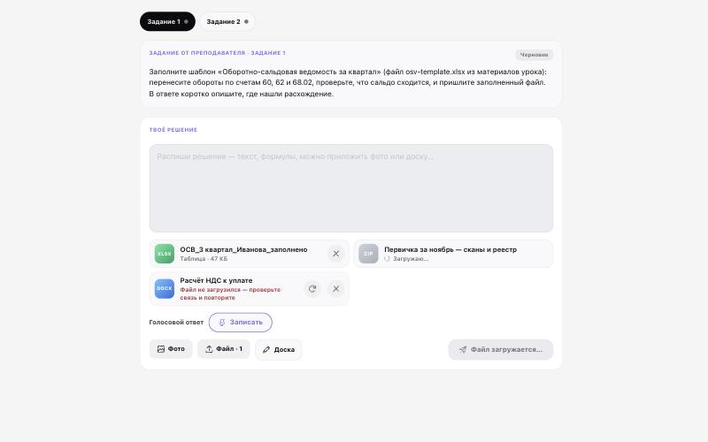<figcaption>Ученик · светлая · 1440×900</figcaption></figure>
      <figure>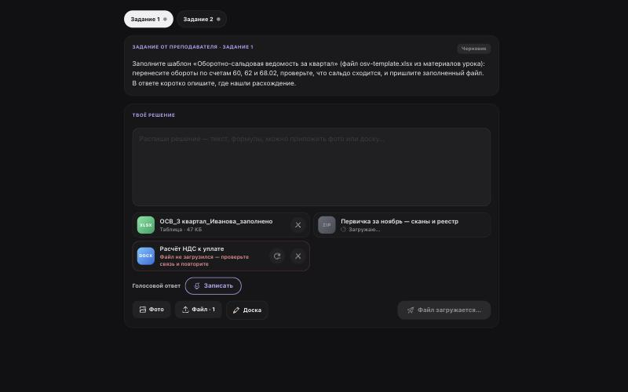<figcaption>Ученик · тёмная</figcaption></figure>
      <figure>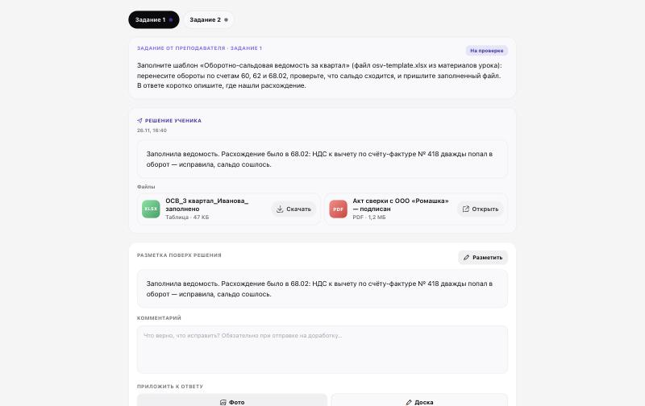<figcaption>Учитель · светлая</figcaption></figure>
      <figure>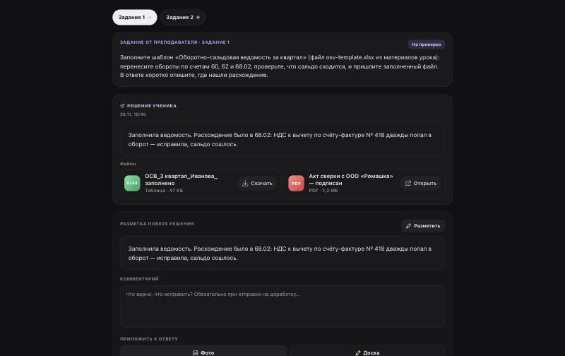<figcaption>Учитель · тёмная</figcaption></figure>
    </div>
  </section>

  <section>
    <div class="plat-head"><span class="eyebrow">iPhone</span><h2>Палец, мягкие цели 44</h2></div>
    <p>Карточка в одну колонку, имя до трёх строк с фейдом (без многоточия), расширение — на цветном значке. Действия — круги 44 без подписи и без наведения. Проверка учителя — в листе с грабером, как сейчас «Сложные» на телефоне; файлы появляются там же, где текст решения.</p>
    <div class="frames phone">
      <figure>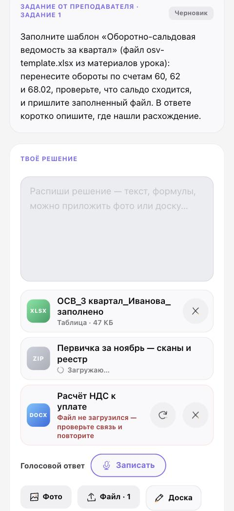<figcaption>Ученик · светлая · 402×874</figcaption></figure>
      <figure>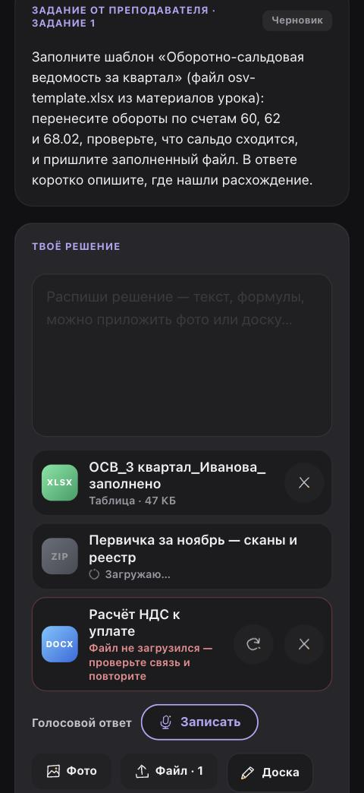<figcaption>Ученик · тёмная</figcaption></figure>
      <figure>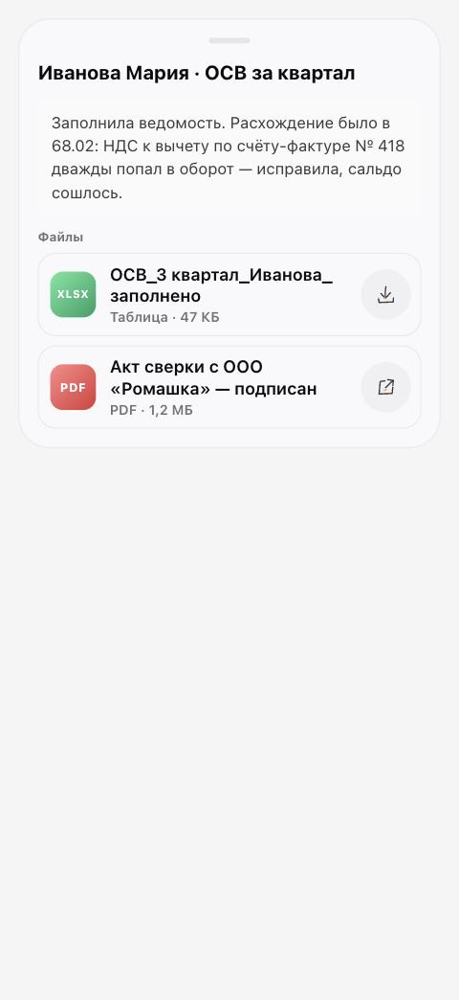<figcaption>Учитель, лист · светлая</figcaption></figure>
      <figure>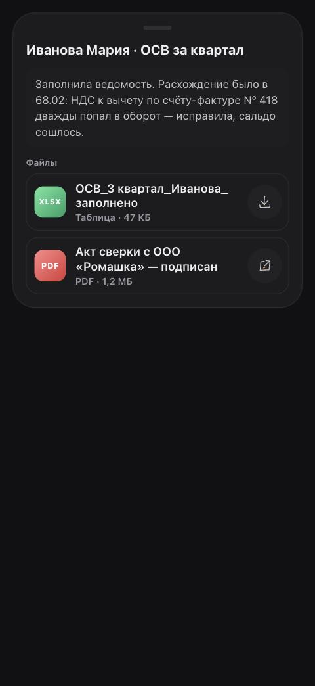<figcaption>Учитель, лист · тёмная</figcaption></figure>
    </div>
  </section>

  <section>
    <div class="plat-head"><span class="eyebrow">iPad</span><h2>Портрет — ученик, ландшафт — учитель</h2></div>
    <p>Те же цели 44 и никаких действий за наведением: в ландшафте айпад получает десктопную раскладку, поэтому «Скачать» и «Открыть» показаны кругами всегда. Кнопка «Отправить решение» остаётся в форме, как сегодня; перенос главного действия в капсулу справа — общая задача экрана домашки, не этой.</p>
    <div class="frames tablet">
      <figure>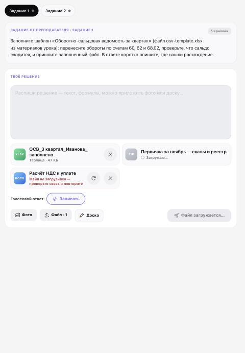<figcaption>Ученик · светлая · 820×1180</figcaption></figure>
      <figure>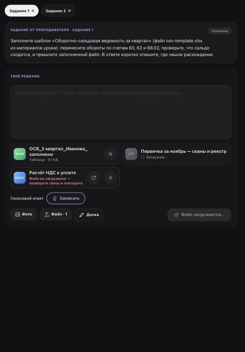<figcaption>Ученик · тёмная</figcaption></figure>
      <figure>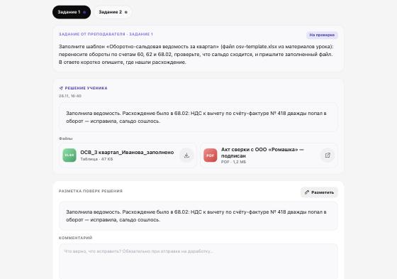<figcaption>Учитель · светлая · 1180×820</figcaption></figure>
      <figure>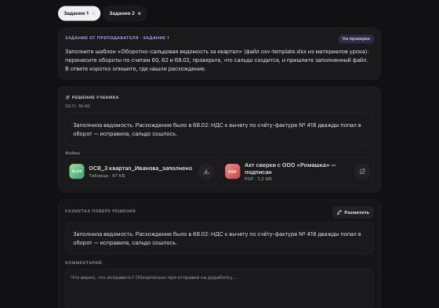<figcaption>Учитель · тёмная</figcaption></figure>
    </div>
  </section>

  <section>
    <div class="plat-head"><span class="eyebrow">Android</span><h2>Заливка, без iOS-стекла</h2></div>
    <p>Карточки — сплошная заливка поверхности, цели 44+ (48 dp у кнопок листа), шрифт системный. Системное «Назад» закрывает лист проверки. Скачанный файл уходит в «Загрузки» и открывается в Excel / Таблицах.</p>
    <div class="frames phone">
      <figure>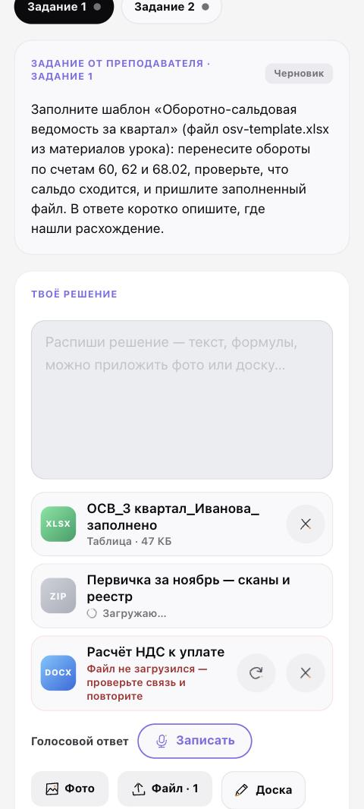<figcaption>Ученик · светлая · 412×915</figcaption></figure>
      <figure>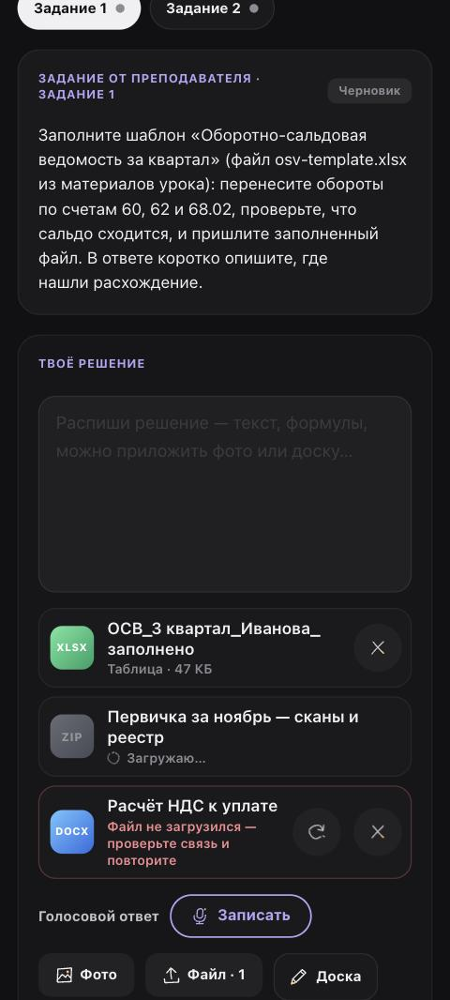<figcaption>Ученик · тёмная</figcaption></figure>
      <figure>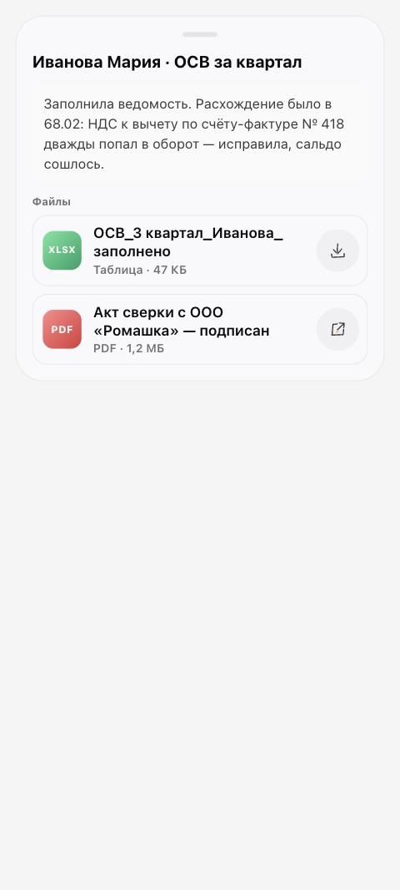<figcaption>Учитель, лист · светлая</figcaption></figure>
      <figure>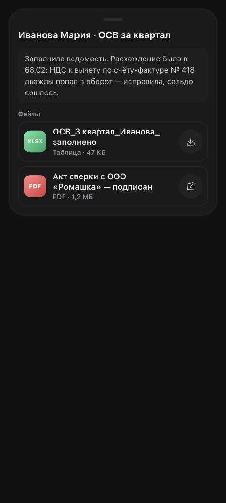<figcaption>Учитель, лист · тёмная</figcaption></figure>
    </div>
  </section>

  <section>
    <h2>Хранилище и доступ</h2>
    <div class="notes">
      <div class="card">
        <h3>Новый приватный бакет</h3>
        <ul>
          <li><code>homework-answer-files</code>, 20 МБ, список типов как выше.</li>
          <li>Путь: <code>uid ученика / id карточки / время-uuid.xlsx</code>. В сдачу пишется путь, имя, размер и тип — не ссылка.</li>
          <li>Миграция только добавляет: бакет, функцию и три политики. Существующие данные и политики не трогаются. Перед выпуском — снимок count+md5 затронутых таблиц.</li>
          <li><code>task-media</code> не подходит: его читает любой вошедший.</li>
        </ul>
      </div>
      <div class="card">
        <h3>Проверено под ролями (PGlite, 25 проверок)</h3>
        <div class="tests">
          <span>свой файл кладёт и читает</span><span>чужая папка — отказ</span><span>чужая карточка — отказ</span>
          <span>учитель группы читает</span><span>учитель другого предмета — нет</span><span>автор курса видит покупателя</span>
          <span>чужой учитель покупателя — нет</span><span>гость — ничего</span><span>подмена — нельзя</span><span>удаляет только загрузивший</span>
        </div>
        <p style="font-size:13px">Скрипт: <code>scripts/checkAnswerFilesDb.mjs</code>.</p>
      </div>
      <div class="card">
        <h3>Что не входит</h3>
        <ul>
          <li>Учитель прикладывает исправленный файл к комментарию — можно следующим шагом.</li>
          <li>ИИ-проверка не читает файлы (только текст и фото).</li>
          <li>Голосовые ответы лежат в <code>task-media</code>, который читает любой вошедший, — отдельная задача на сужение доступа.</li>
        </ul>
      </div>
    </div>
  </section>
</main>
